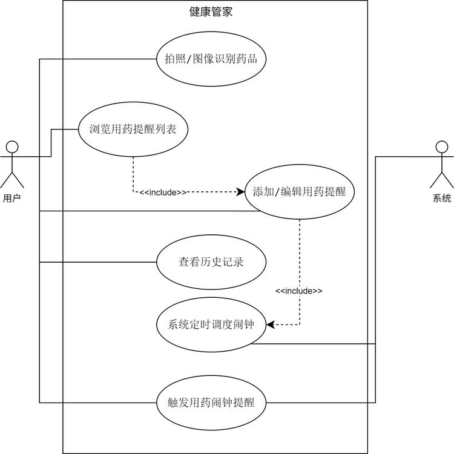
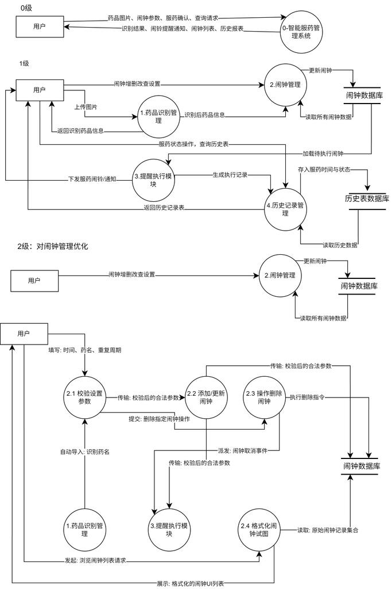
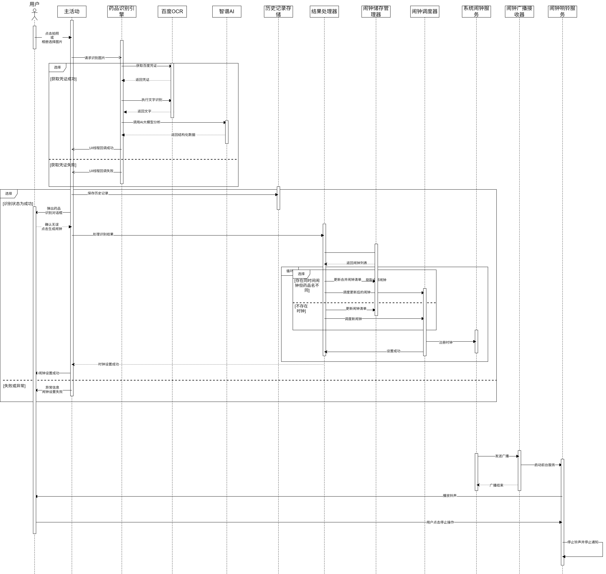
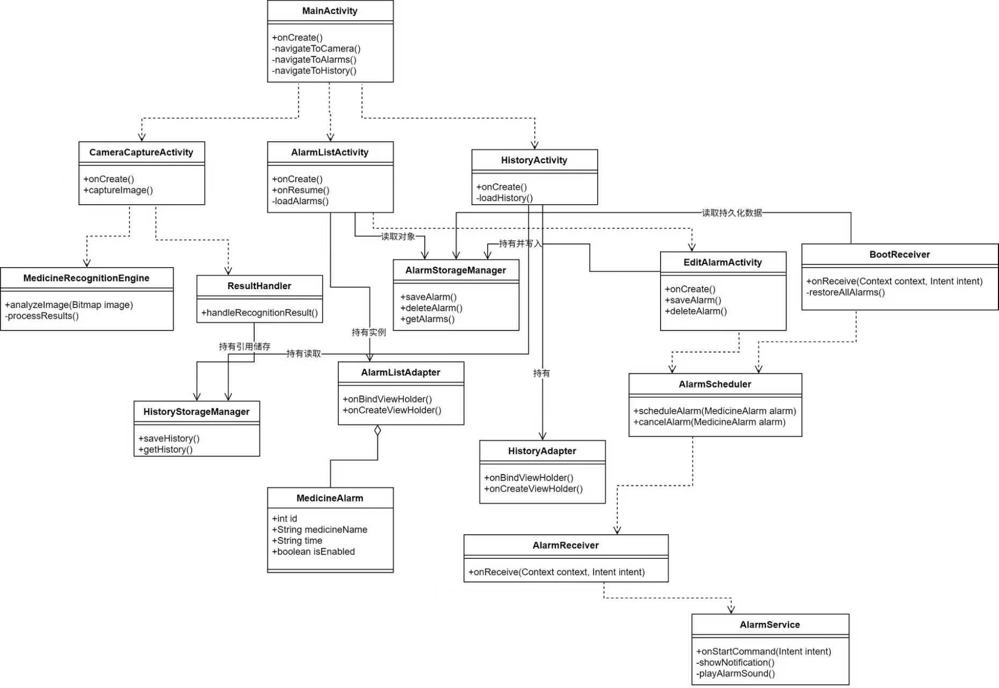
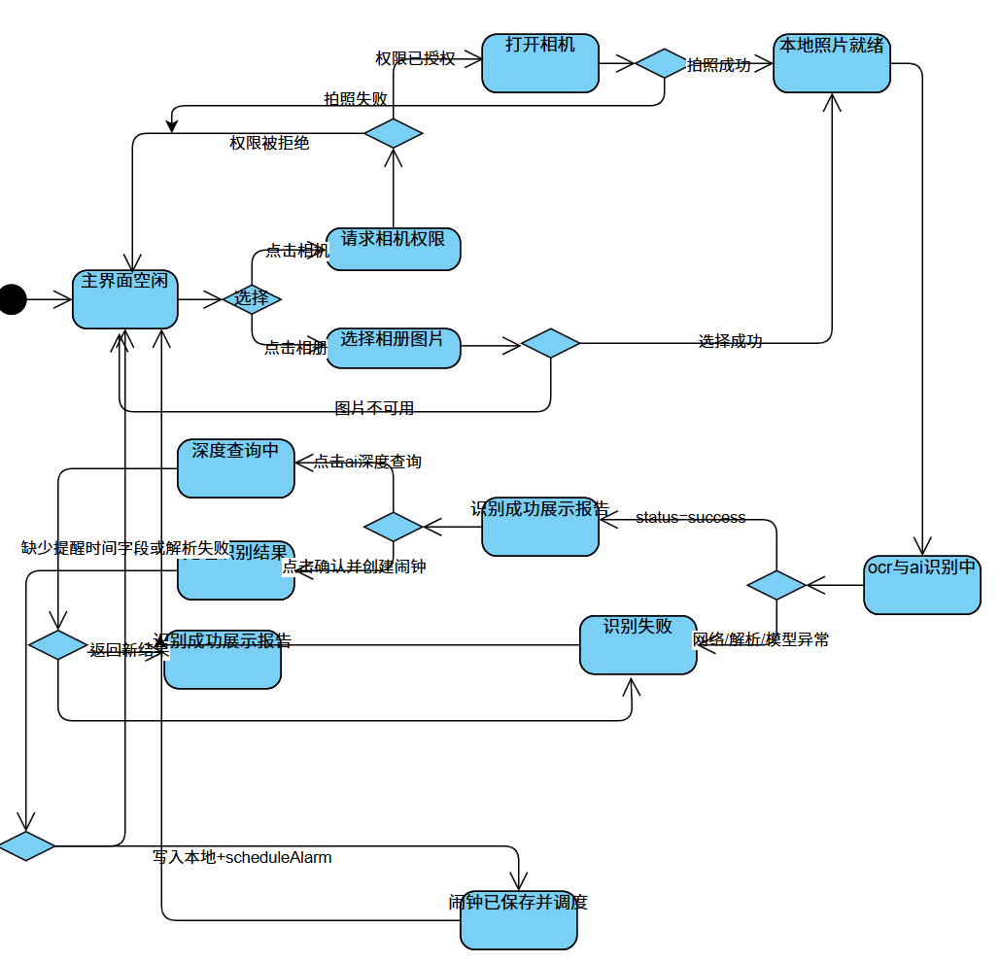
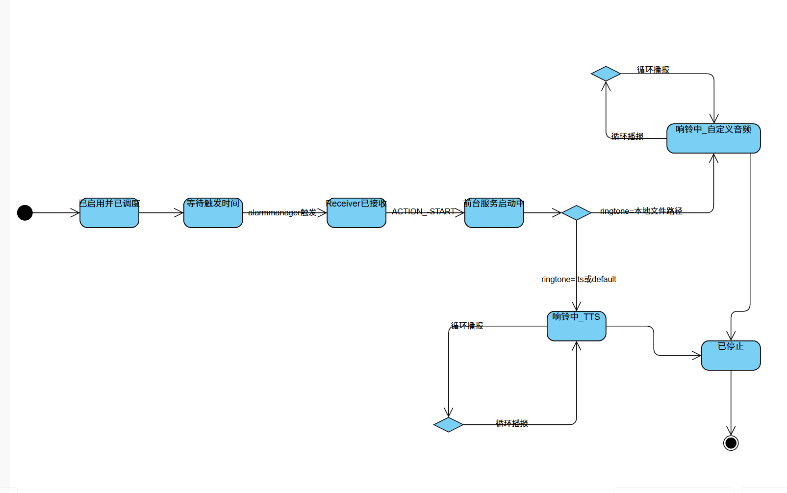

本案例基于团队真实项目 HealthManager 智能用药提醒与健康管理系统（项目路径：
/mnt/e/tools/visialstudio/project/project5）整理，面向软件工程课程考核/答辩，提供可复用的答题模板与延伸问答。
随着我国老龄化程度加深，慢性病患者（如高血压、糖尿病、心血管疾病患者）的用药依从性成为影响疗效的关键因素。传统纸质药盒或单一闹钟提醒存在以下痛点：
Health Manager 正是针对上述场景设计的 Android 原生应用，目标用户为：
| 功能模块 | 说明 |
|---|---|
| 拍照智能识别药品 | 用户对准药盒拍照，系统通过百度 OCR + 智谱 AI 自动提取药名、剂量、频次、配伍禁忌等信息。 |
| 用药提醒计划管理 | 支持 AI 自动生成、手动添加、编辑、删除用药闹钟，可设置每日/自定义周期。 |
| 高精度强提醒 | 基于 AlarmManager.setExactAndAllowWhileIdle + 前台服务 + TTS 语音播报，穿透 Doze 模式，锁屏也能全屏弹窗。 |
| 设备重启恢复 | BootReceiver 监听开机广播，自动重新注册所有未到期闹钟，防止关机/清理后失效。 |
| 用药历史记录 | 打卡式历史足迹，支持按时间倒序查看，容量上限控制。 |
| 层级 | 技术/组件 |
|---|---|
| 移动端 | Android Kotlin（minSdk 31，targetSdk 36） |
| 相机 | CameraX 1.3.0 |
| 网络 | OkHttp（HTTPS） |
| OCR | 百度 OCR API（accurate_basic） |
| 大模型 | 智谱 AI GLM-4-Flash |
| 定时调度 | AlarmManager + PendingIntent + BroadcastReceiver |
| 后台保活 | Foreground Service + WakeLock + START_STICKY |
| 语音播报 | TextToSpeech（TTS），缺失时降级为系统铃声 |
| 本地存储 | SharedPreferences + JSON |
| 构建工具 | Gradle 9.x / Android Studio |
| 成员 | 角色 | 主要职责 |
|---|---|---|
| 朱鹏远 | 组长 / 架构师 | 整体技术架构、模块接口设计、AlarmScheduler 调度中心、BootReceiver 灾备恢复、项目文档统筹。 |
| 吴轩赫 | 视觉端 / AI 集成 | CameraX 拍照实现、MedicineRecognitionEngine 双驱 AI 引擎（OCR + 智谱 AI）、ResultHandler 回调、Prompt 工程。 |
| 张恺祺 | 后端进程保活 | AlarmService 前台服务、AlarmReceiver 广播接收、WakeLock 管理、后台抗杀与 ROM 适配。 |
| 周嘉晨 | 数据持久化 | AlarmStorageManager、HistoryStorageManager、JSON 序列化/反序列化、数据容灾与容量控制。 |
| 杨佳禾 | UI 交互与测试 | 全部 Activity/Adapter UI 实现、权限引导、测试计划制定、黑盒/集成/回归测试执行。 |
在答辩或试卷中，常出现「请介绍你参与的项目，并说明你承担的工作」这类题目。下面给出 5 种角色的答题模板，可直接根据身份替换使用。
我担任 HealthManager 项目的组长和架构师。项目是为中老年慢性病患者打造的 Android 智能用药提醒 APP。我的核心工作是制定三层分层架构（表现层 / 业务逻辑层 / 数据持久层），设计模块间接口，封装
AlarmScheduler统一调度系统闹钟，并实现BootReceiver完成设备重启后的闹钟自动恢复。在协作中，我采用「接口先行、实体驱动」的方式：先定义MedicineAlarm数据类和scheduleAlarm(alarm)方法签名，再让 UI 组、AI 组、持久化组并行开发，从而把 5 人代码像拼图一样拼装起来，降低了集成风险。
我负责视觉输入和 AI 识别模块。用户点击「拍照识别」后，
CameraCaptureActivity调用 CameraX 获取药盒图像；我编写的MedicineRecognitionEngine在子线程中将图片压缩、Base64 编码，先请求百度 OCR 提取包装文字，再把文字连同用户已有药品列表一起投递给智谱 GLM-4-Flash，利用 Prompt 让大模型清洗出结构化的{medicine, dosage, time}JSON。为避免网络阻塞主线程导致 ANR，整条链路放在子线程，并通过ResultHandler回调把结果安全传回主线程刷新EditAlarmActivity表单。
我负责保证提醒在息屏、杀后台、甚至重启后仍能触发。技术上采用三层防护：调度层使用
AlarmManager.setExactAndAllowWhileIdle穿透 Doze 休眠；执行层在AlarmReceiver.onReceive()中获取WakeLock并通过startForegroundService()拉起AlarmService，挂上高优先级通知实现前台保活；灾备层通过BootReceiver监听BOOT_COMPLETED，从本地存储读取闹钟并重新注册。服务返回START_STICKY，异常终止后系统会尝试自动重启。
我负责本地数据的存储与读取。核心实体是
MedicineAlarm，我用AlarmStorageManager单例将闹钟列表序列化为 JSON 数组，通过SharedPreferences以MODE_PRIVATE写入内部闪存；历史记录由HistoryStorageManager维护，采用MAX_HISTORY_SIZE = 50的 FIFO 溢出淘汰策略，防止数据无限膨胀。读取时加入 try-catch 容错：若 JSON 损坏则返回空列表并在下次保存时自动重建，避免应用闪退。
我负责全部前端界面和测试工作。表现层包括
MainActivity、CameraCaptureActivity、EditAlarmActivity、AlarmListActivity、HistoryActivity及对应的RecyclerView.Adapter。我采用 Material Design 组件和大字号、高对比度配色，降低老年用户操作门槛。同时我制定了《测试计划》和《测试分析报告》，组织 5 人交叉执行 14 项测试用例，覆盖功能、接口、弱网、边界、后台保活、重启恢复等场景，最终缺陷修复后再进行回归测试。
软件系统建模的本质是用抽象化、可视化的手段描述系统「做什么」和「怎么做」。常见方法可分为四大类：
以数据和过程为核心，适用于需求明确、数据关系清晰的系统。
| 方法 | 特点 | 适用范围 |
|---|---|---|
| 数据流图（DFD） | 描述数据从输入到输出的变换过程，强调功能分解和数据流动。 | 需求分析、系统边界划分、模块接口设计。 |
| 数据字典 | 对 DFD 中所有数据流、数据存储、数据项进行精确定义。 | 与 DFD 配套使用，消除二义性。 |
| E-R 图 | 描述实体、属性及实体间关系，是数据库设计的核心模型。 | 关系型数据库概念设计。 |
以对象和交互为核心，UML 是其标准表示法，适用于复杂、演化的系统。
| 图 | 特点 | 适用范围 |
|---|---|---|
| 用例图 | 从用户视角描述系统功能及 Actor 与 Use Case 的关系。 | 需求获取、功能范围确认。 |
| 类图 | 描述类的属性、方法及类之间的继承、关联、聚合、依赖关系。 | 静态结构设计。 |
| 顺序图 | 按时间轴展示对象间消息传递顺序。 | 动态行为设计、接口协议确认。 |
| 状态图 | 描述对象在生命周期内的状态转换及触发事件。 | 具有明显状态变化的实体，如闹钟、订单。 |
| 活动图 | 描述业务流程或算法的工作流，强调控制流和并行。 | 业务流程建模。 |
使用严格的数学符号（如谓词逻辑、Z 语言、Petri 网、B 方法）描述系统行为和约束。
例如，对闹钟触发的精确性可给出形式化规约： $$\forall a \in \text{Alarms}, \; |T_{actual}(a) - T_{scheduled}(a)| \le 100\,\text{ms}$$
通过具体使用场景描述系统行为，强调「谁在什么情况下想做什么」。
| 方法 | 特点 | 适用范围 |
|---|---|---|
| 用例（Use Case） | 结构化描述用户与系统的交互步骤，含前置/后置条件、主/备选流。 | 需求文档、验收测试依据。 |
| 用户故事（User Story） | 轻量级描述：「作为…，我希望…，以便…」。 | 敏捷开发、快速迭代。 |
本项目综合使用了面向对象建模为主、结构化建模为辅的方法，具体包括：用例图、数据流图、顺序图、类图、状态图。

说明：

说明：

说明：
CameraCaptureActivity 拍照，生成 JPEG 图片路径；MedicineRecognitionEngine.recognize()，引擎在子线程中依次请求百度 OCR、智谱 AI；RecognitionCallback 通知 ResultHandler；ResultHandler 在主线程更新 EditAlarmActivity 表单；AlarmStorageManager 并调用 AlarmScheduler.scheduleAlarm() 注册系统闹钟。效果：顺序图明确了跨线程回调机制和模块间消息顺序，为后续排查「网络请求白屏」「回调不到 UI」等问题提供了时序依据。

说明：
MedicineAlarm 核心数据类，携带 id、medicineName、dosage、time 等属性。效果：类图使 5 人团队对模块边界和依赖关系达成一致，避免了循环依赖和职责混乱。


说明：
BootReceiver、START_STICKY、TTS 降级等代码实现。高分回答：
功能需求可对应概要设计中的 F1~F10：
非功能需求包括：
| 类别 | 具体需求 |
|---|---|
| 性能 | OCR ≤ 10s，AI ≤ 20s，闹钟触发偏差 ≤ 100ms，历史加载 ≤ 500ms。 |
| 可靠性 | 不允许漏报，支持 Doze 模式、后台被杀、重启后恢复。 |
| 可用性 | 大字体、高对比度、少步骤，适合老年用户；AI 结果必须人工确认。 |
| 安全性 | 用药数据本地私有存储；AI 仅作辅助，最终决策权在用户。 |
| 兼容性 | Android 12+，适配原生 Android 与国产 ROM 的权限差异。 |
| 可维护性 | 三层架构、模块接口清晰、日志体系完善。 |
高分回答：
高分回答：
高分回答：
画用例图遵循四步：
<<include>>：某个用例必然包含另一个用例，如「拍照识别」必然包含「请求 OCR」。<<extend>>：在特定条件下扩展，如「提醒触发」在 TTS 不可用时 extend 为「播放默认铃声」。高分回答：
本项目采用三层分层架构（3-Tier Architecture）：
MedicineAlarm 实体 + AlarmStorageManager / HistoryStorageManager，负责数据存储。上层依赖下层，下层不感知上层，通过 MedicineAlarm 实体和统一接口（如 scheduleAlarm()）交互，符合高内聚低耦合原则。
高分回答：
模块划分对应概要设计中的 M-UI-01~M-UI-07、M-LGC-01~M-LGC-06、M-DAT-01~M-DAT-03。
高内聚：
AlarmScheduler 只做一件事：封装 AlarmManager 注册/取消/更新闹钟；AlarmStorageManager 只负责闹钟 JSON 的读写；MedicineRecognitionEngine 只负责 OCR + AI 的图像识别链路。低耦合：
AlarmManager，而是通过 AlarmScheduler.scheduleAlarm(alarm) 黑盒调用；ResultHandler 回调与 UI 通信，引擎内部更换 OCR 厂商不影响 UI；MedicineAlarm 作为通用介质，在 UI、逻辑、持久层之间传递，避免各层直接依赖彼此的具体实现。高分回答：
这是基于业务特性、数据规模和开发阶段的综合权衡：
局限性：无并发锁保护、无云端备份、不支持复杂查询。后续若增加长期统计图表或多用户数据，可平滑迁移到 Room。
高分回答：
类图详见 2.3.4。包结构可划分为：
com.example.healthmanager
├── ui # Activity、Adapter、自定义 View
├── engine # MedicineRecognitionEngine、RecognitionCallback
├── service # AlarmService、AlarmReceiver、BootReceiver
├── scheduler # AlarmScheduler
├── data # AlarmStorageManager、HistoryStorageManager
├── model # MedicineAlarm、HistoryRecord
└── util # 时间格式化、权限工具、日志工具
包图体现了纵向分层 + 横向职责的划分：ui 只依赖 engine/scheduler/data；data 不依赖 ui；service 通过 scheduler 和 data 完成恢复。
高分回答：
推荐使用迭代/增量模型 + 原型模型相结合：
理由：
高分回答：
瀑布模型要求需求在前期完全确定，但本项目存在多处不确定性：
如果采用纯瀑布模型，很可能在后期集成阶段才发现 AI 解析不稳定或闹钟被系统拦截，导致大规模返工。迭代模型可以在每个增量结束后及时验证并修正方向。
高分回答：
高分回答：
采用分层测试策略：
| 测试层级 | 对象 | 方法/工具 |
|---|---|---|
| 单元测试 | JSON 解析、AlarmScheduler 时间计算、StorageManager 读写 |
JUnit + Mockito |
| 集成测试 | CameraX → OCR → AI → UI 数据流；AlarmReceiver → Service → Notification | 真机调试 + Logcat |
| 确认测试 | 对照需求规格说明书逐项验证 F1~F10 | 测试用例表 + 黑盒测试 |
| 系统测试 | 完整链路：拍照 → 识别 → 保存 → 触发 → 确认 → 历史 | 端到端回归测试 TEST-016 |
| 兼容性测试 | 不同 Android 版本、不同厂商 ROM 的后台行为 | OPPO/小米/华为等多设备 |
| 性能/稳定性测试 | 闹钟触发精度、后台保活、并发触发 | adb shell dumpsys alarm、长时间压测 |
高分回答：
MedicineAlarm 的时间字符串解析是否正确；AlarmStorageManager.serializeToJson() 和 getAlarms() 是否互逆；AlarmScheduler 计算下一次触发时间是否考虑重复周期。EditAlarmActivity；AlarmReceiver 触发后能否正确启动 AlarmService。高分回答：
以「手动添加闹钟」功能为例：
| 输入项 | 有效等价类 | 无效等价类 | 边界值 |
|---|---|---|---|
| 药品名 | 1~100 字符的非空字符串 | 空字符串；>100 字符；仅特殊符号 | 1 字符；100 字符；101 字符 |
| 剂量 | "1片"、"2粒" 等 | 空；纯数字无单位；负数 | — |
| 时间 | "HH:mm" 格式，00:00~23:59 | "25:00"、"12:60"、非时间格式 | "00:00"；"23:59" |
| 重复周期 | daily / 自定义星期 | 非法字符串 | — |
| 历史记录数 | 0~50 | 超过 50 | 0；50；51 |
设计原则：每个等价类至少选一个代表值；边界值通常选取最小值、略高于最小值、正常值、略低于最大值、最大值。
高分回答：
AlarmReceiver.onReceive() 的实际触发时间；BootReceiver 是否恢复所有闹钟；adb shell dumpsys alarm 查看 PendingIntent 注册状态。高分回答：
本项目采用多层冗余 + 系统级调度策略：
AlarmManager.setExactAndAllowWhileIdle()，可在 Doze 模式下强制唤醒 CPU；AlarmReceiver 立即拉起 AlarmService 并 startForeground()，挂上不可清除的高优先级通知，避免被系统回收；AlarmReceiver 中获取 PARTIAL_WAKE_LOCK，确保关键逻辑执行期间 CPU 不睡眠；AlarmService 返回 START_STICKY，异常被杀后系统会尝试重建；BootReceiver 监听 BOOT_COMPLETED，重启后重新注册所有闹钟；用可靠性语言可表示为：设各层失效概率为 $p_1, p_2, \dots, p_n$，则漏报概率为： $$P_{miss} = \prod_{i=1}^{n} p_i$$ 多层独立冗余使得 $P_{miss}$ 显著降低。
高分回答：
医疗场景下，AI 错误可能导致严重后果，因此本项目坚持「AI 辅助、人工决策」原则：
EditAlarmActivity 中确认后才能保存；高分回答：
基于现有三层架构，可按以下方式演化：
HistoryStorageManager 可升级为 Room + 云端同步。高分回答：
MedicineAlarm 数据类、scheduleAlarm()、saveAlarm() 等方法签名，再并行实现；main，避免直接在主分支修改；AlarmScheduler、MedicineRecognitionEngine）由组长或相关成员 Review 后再合并；高分回答：
| 危机表现 | 具体事件 | 解决方案 |
|---|---|---|
| 需求不明确 | 初期对「提醒强度」理解不一致，有人认为是普通通知，有人认为是全屏弹窗+语音 | 通过用例图和原型明确需求，写入概要设计。 |
| 集成风险 | AI 组返回 JSON 格式与 UI 组预期不一致，导致解析崩溃 | 定义统一 MedicineAlarm 实体和 JSON Schema，增加 try-catch 容错。 |
| 外部依赖失控 | 智谱 AI 模型名 glm-4 不可用，API Key 过期 |
改为 glm-4-flash，并将 Key 后续迁移到 local.properties。 |
| 构建环境危机 | 全局 Gradle 代理配置残留导致 assembleDebug 失败 |
清理 gradle.properties，文档化环境配置。 |
| 平台差异危机 | OPPO ColorOS 对后台服务限制严格，闹钟延迟 | 引导用户开启自启动+电池白名单，并在测试中记录环境差异。 |
高分回答：
| 工具类别 | 工具 | 用途 |
|---|---|---|
| IDE | Android Studio | Kotlin 编码、布局设计、调试、构建 |
| 版本控制 | Git + GitHub | 代码版本管理、分支协作 |
| 建模工具 | PlantUML / Mermaid / draw.io | 用例图、类图、顺序图、状态图、数据流图 |
| 接口调试 | Postman / curl | 百度 OCR、智谱 AI 接口预验证 |
| 日志分析 | Logcat / adb logcat |
运行时日志采集、问题定位 |
| 系统调试 | adb shell dumpsys alarm/notification |
验证闹钟注册和通知状态 |
| 文档工具 | Markdown / Pandoc | 需求、设计、测试文档编写 |
| 构建工具 | Gradle | APK 打包、依赖管理 |
请结合你参与的项目，说明： 1. 项目背景与主要功能； 2. 采用了哪些软件系统建模方法？请结合图示说明； 3. 项目采用了什么软件体系结构？如何体现高内聚低耦合？ 4. 在测试与质量保证方面做了哪些工作？
1. 项目背景与主要功能
HealthManager 是为中老年慢性病患者设计的 Android 智能用药提醒应用。项目背景源于老年人漏服、错服药物的普遍问题，以及普通闹钟在 Android 后台限制下容易失效的痛点。主要功能包括：拍照识别药品（百度 OCR + 智谱 AI）、用药闹钟管理、高精度提醒（AlarmManager + 前台服务 + TTS）、设备重启恢复、用药历史记录。
2. 软件系统建模方法
本项目综合使用了面向对象建模和结构化建模：
3. 软件体系结构
采用三层分层架构：表现层（Activity/Adapter）、业务逻辑层（AI 引擎/调度器/服务/接收器）、数据持久层（Manager/Entity）。高内聚体现在每个模块职责单一，如 AlarmScheduler 只负责闹钟调度；低耦合体现在上层通过统一接口调用下层，如 UI 不直接操作 AlarmManager，而是调用 AlarmScheduler.scheduleAlarm(alarm)，AI 引擎通过回调与 UI 通信。
4. 测试与质量保证
按照《测试计划》执行了 14 项测试用例，覆盖功能测试、接口测试、集成测试、弱网容错、边界测试、后台保活、重启恢复等。关键质量指标包括：
通过以上工作，项目在中期阶段实现了核心功能的全链路打通，并具备了良好的可扩展性和可维护性。
附注：本文档中的项目图片已按
assets/project/相对路径嵌入，请确保该目录与本文档位于同一父目录下，以便正确渲染。